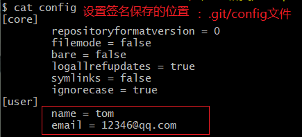
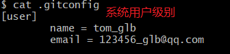
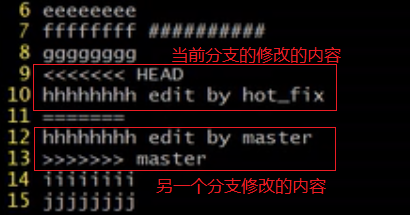
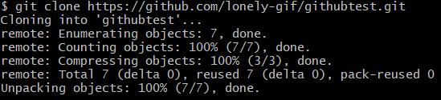
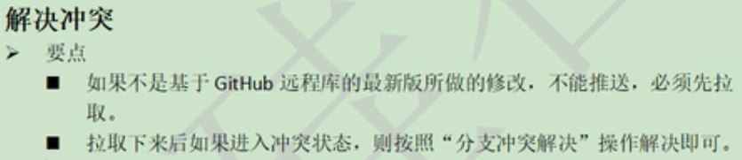
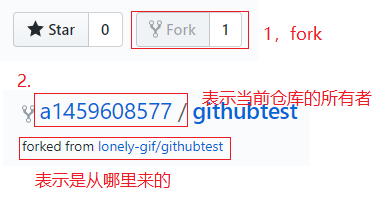
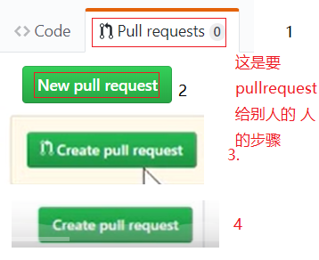
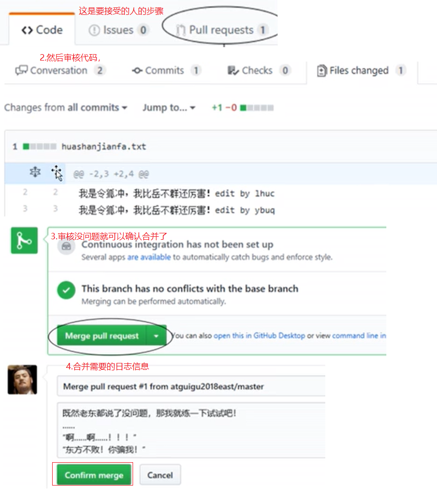
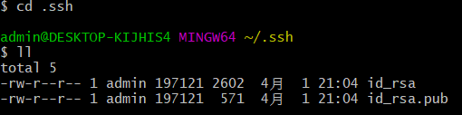
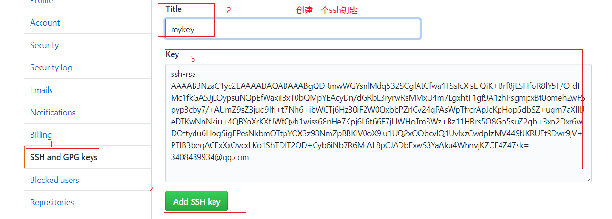

Git笔记
基本命令
-
本地库初始化：
-
设置签名： 作用是区分不同的开发人员
-
形式
- 用户名：tom
- email： 1459608577@qq.com
-
项目级别/仓库级别：仅在当前本地库有效
- 命令： git config
- 例如： git config user.name 用户名，git config user.email 123456@
- 
-
系统用户级别： 登录当前操作系统的用户范围
- 命令： git config --global
- 
- 优先级：项目级别 > 系统用户级别
- 查看状态： git status
- 添加暂存区： git add 文件名
-
提交到仓库：
- 语法一： git commit 文件名
- 语法二： git commit -m '提交文件的备注信息' 文件名
-
查看历史记录操作：
-
git log：最完整方式
- 空格+向下箭头：向下翻页
- b： 向上翻页
- q:退出
- git log --pretty=oneline：比较简洁
- git log --oneline：更简洁
- git reflog：
- 前进后退： git reset --hard "使用git reflog得到的索引值(hash)"
-
删除文件并找回：
- 前提： 删除文件之前，文件存在时的状态使用git add提交到本地库
- 操作： git reset --hard 指针位置
- 比较文件差异：git diff 文件名
-
git的分支
- 创建分支：git branch 分支名
- 查看分支：git branch -v
- 切换分支：git checkout 分支名
-
合并分支：
- 第一步：切换到要合并的分支上git checkout 分支名
- 第二步：使用git merge 合并过来的分支名合并即可
-
解决冲突：在不同分支中修改同一文件的同一个地方，然后分别提交，然后git merge 合并会报错
- 
- 第一步：编辑文件删除特殊符号
- 第二步：把文件修改好，保存退出
- 第三步：git add[文件名]
- 第四步：git commit -m '修改信息'(不要带文件名)
-
在git中创建网页链接的别名
- 查看已有的别名： git remote -v
- 给连接起别名： git remote add 别名 https://baidu.com(链接地址)
- 把分支推送到远程仓库： git push 别名 分支名(git push origin master)
-
克隆：
- 命令： git clone github上的链接(可以用来下载文件)
- 
-
效果：
- 把远程库完整的下载到本地
- 创建origin远程地址别名
- 初始化本地库
-
要是一个团队才能上传到远程库就需要邀请别人加入团队
从远程库上传拉取文件步骤
- 先在文件夹中初始化git init
- 然后创建一个 testa.txt的文件，然后add 和commit
- 然后创建远程库，给远程仓库起别名git remote add 别名 链接地址，使用git push origin master把文件推送到远程库
- 然后新建另一个文件夹，在里面使用git clone 远程仓库地址把仓库克隆下来
- 然后把文件做一下修改add和commit，在push提交一次，如果不是用一个团队就不可以提交，先成为同一个团队
- 在做拉取操作，先git fetch origin master，现在是看不到远程库的修改们需要切换分支git checkout origin/master，就能看到了
- 然后把远程代码合并到本地git merge origin/master另一种方式就是git pull origin master,可以代替fetch和merge
-

- 步骤： 先在提交不了的那里pull一下，然后把文件中的东西改掉在add和commit就饿可以提交了
跨团队协作
步骤
- 先fork
- 
- 然后照常add，commit， push到自己的远程仓库
- 在点击pullrequest
- 
- 
ssh登录
步骤：
- cd ~进入用户的家目录，然后rm -rf .ssh/把以前创建的删掉
- 执行ssh-keygen -t rsa -C 3408489934@qq.com,[C一定要是大写的，后面跟的是邮箱地址]然后直接确认
- 
- 然后cat id_rsa.pub文件，复制里面的内容
- 
- 然后去工作目录把文件修改一下在commit提交，然后给远程仓库ssh链接起个别名git remote add origin_ssh ssh链接
- 然后在提交，git push origin_ssh master
Git工作流
CentOS6.5安装GitLab